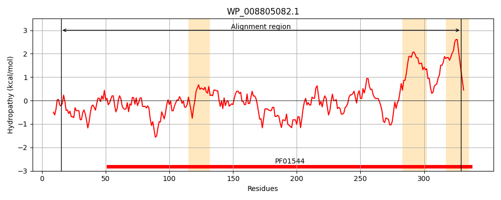
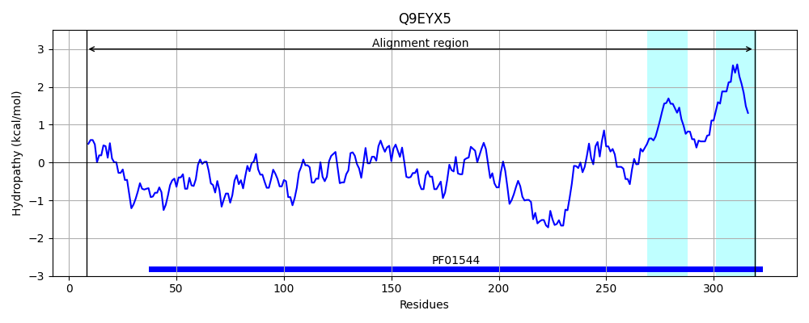
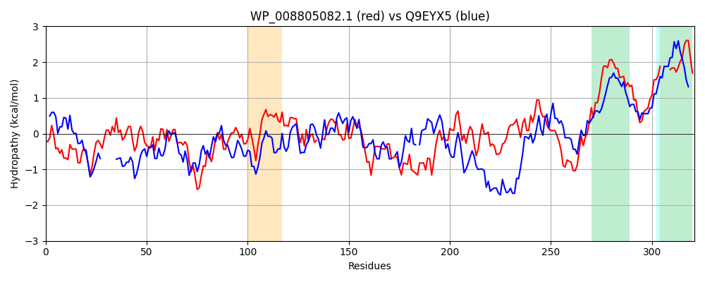

Hit Accession: Q9EYX5
Hit TCID: 1.A.35.4.1
Hit Description: gnl|BL_ORD_ID|17930 gnl|TC-DB|Q9EYX5|1.A.35.4.1 Zinc transport protein (Putative Zn transport protein) - Salmonella typhimurium.
Mach Len: 321
e:0.000000
Query TMS Count : 3
Hit TMS Count: 2
TMS-Overlap Score: 1.200000
Predicted Substrates:CHEBI:3290;cadmium(2+), CHEBI:10113;zinc(2+)
BLAST Alignment:
Score: 230 , Bit scores: 93 bits, E-value: 1.4e-21, Alignment length: 321, Percentage identity: 24
Query: 15 DSEVSGLVHGYLFHEQRPPQPIASGEVCARYQALADDKAFIWLHLNLNHATAEKWLTSHFPVADFFFEEIRSGSHTTRIERQGENLFAVLNDVLFRPQDTSAETATLWLYCSPKLVVTARFKPLRFIEWMLPRLQ--TLRVNTSTELLAFLLEEQEEVLEQVVRQASRHVDLIEERLLSNHVQRNRADLARLRRMLLRFQRLLAPEPAAMFRLLNRPPAWMDRAVVQAFRQFTEEFSVVLNDLSGLIERISLLQEEIGARQLEQSNRTLYTLTVITVLALPINIVAGFFGMNVGGIPLASNHHGF----ILLVVIVAIFTL 329
D V V +L + +P+ +V D + WLHLN H + +WL S + + + + S R+ R GE L + + + + LY + +V+ R + + ++ ++ LQ T V+ L+ + E + + +DL E+ LL + R LA LR+ L+ +R +AP+ RL + WM + + + L+++ I R ++ +EI E R YT++++ ++ LP + G FG+N+GGIP GF ILLVV++ TL
Sbjct: 8 DVNVPDAVFAWLLDGRGGVKPLEDNDVI-------DSQHPCWLHLNYTHPDSARWLASTPLLPNNVRDALAGESSRPRVSRMGEGTLITLRCINGSTDERPDQLVAMRLYMDERFIVSTRQRKVLALDDVVSDLQEGTGPVDCGGWLVDVCDALTDHASEFIEELHDKIIDL-EDNLLDQQIPP-RGFLALLRKQLIVMRRYMAPQRDVYARLASERLPWMSDDHRRRMQDIADRLGRGLDEIDACIARTGIMADEIAQVMQESLARRTYTMSLMAMVFLPSTFLTGLFGVNLGGIPGGGWRFGFSLFCILLVVLIGGVTL 319 | Protein Hydropathy Plots: |
|---|
|  |  |
Pairwise Alignment-Hydropathy Plot:
|
|---|
|  |